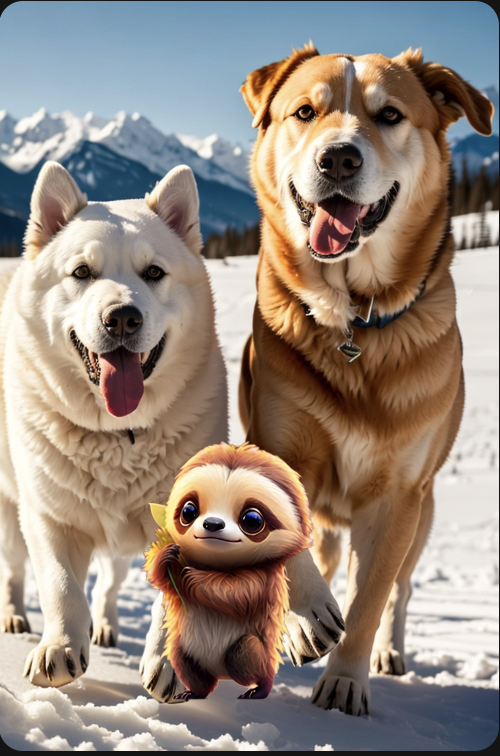

AI painter:

Although AI painting has a wide range of applications, including art creation, film and television production, game development, design and other fields. With the assistance of AI painting tools, the efficiency and quality of painting can be greatly improved, and the possibility of artistic creation is also expanded.Gestures, or the use of light and shadow, are actually not perfect enough. This is also the actual problem of AI painting.AI tools lack real creativity, because they combine the key information or models you input to output pictures, so they will be limited by algorithms and lack sensibility
return